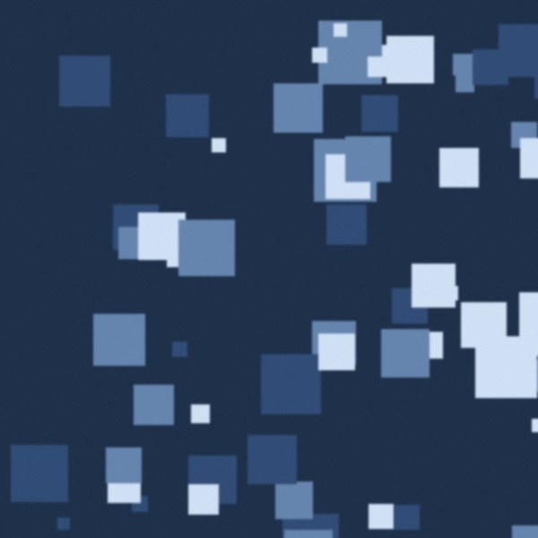
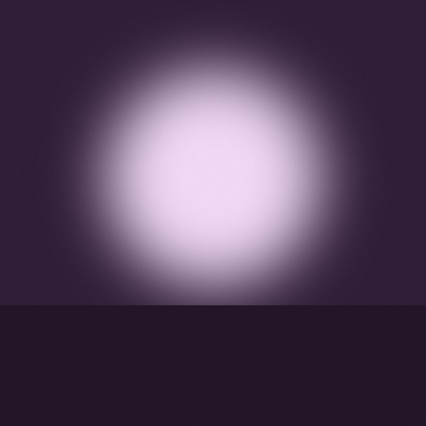

In the crate
Clear
Playing
Sienna
The Marías · Submarine
Up next
6 tracks · 21 min
Hamptons
The Marías · Submarine
Paranoia
The Marías · Submarine
Time (You and I)
Khruangbin · Mordechai
Pelota
Khruangbin · Mordechai

After the Earthquake
Alvvays · Blue Rev

Superstar
Beach House · Once Twice Melody